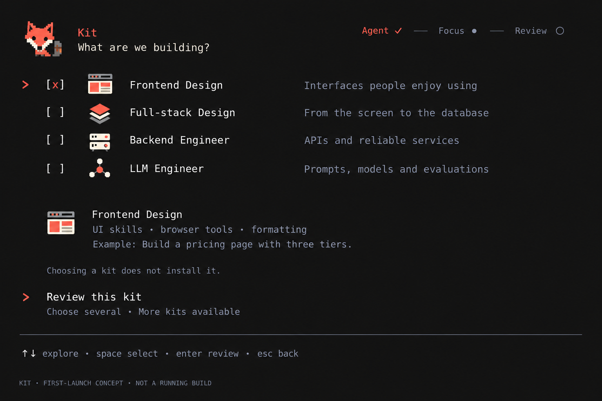
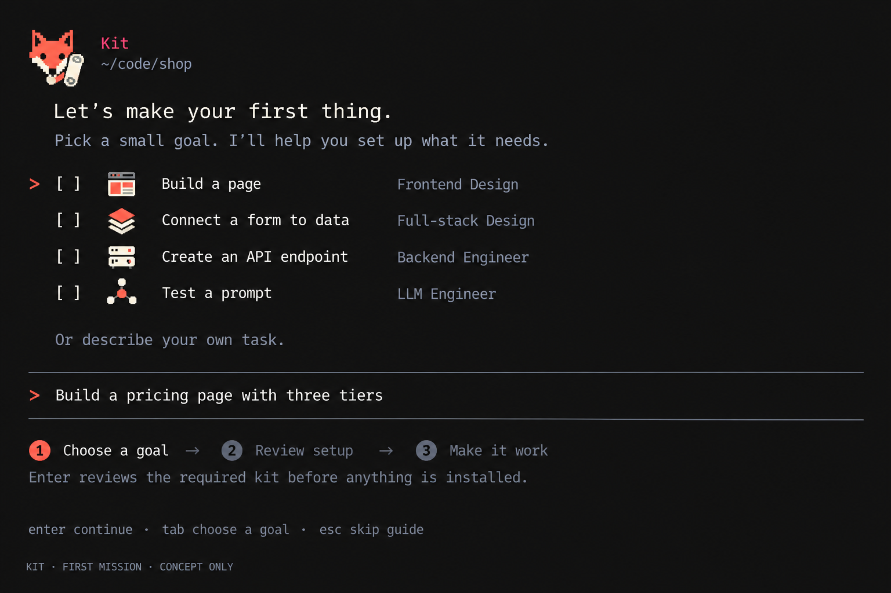
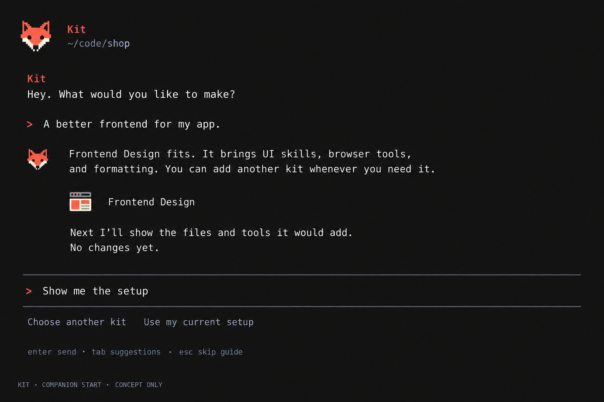

Inspect the exact code assets
A playful first launch for Kit
Concept direction provisionally approved. These earlier studies are references: follow the current build brief. Omit stage labels, progress strips and checklist onboarding, including any pictured here.
Three interaction studies in the existing terminal style. They explore choice, a useful first task, and a consistent fox companion.
Research and complete interaction flow · Daily-session concept
Option 1

Generated concept, not a working interface. Exact generation prompt
Option 2

Generated concept, not a working interface. Exact generation prompt
Option 3

Generated concept, not a working interface. Exact generation prompt
Design review: starter tasks are single-choice drafts; omit the generated checkboxes in Option 2. Use one keyboard-focus marker in Option 1. All concepts require a flat terminal background and real keyboard/motion verification before implementation.